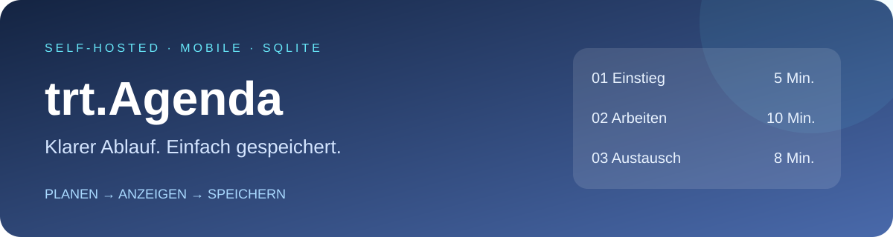

⏱️ Flexible Dauer
5, 10, 8 oder 12 Minuten: Jeder Punkt hat seine eigene Länge. Uhrzeiten werden fortlaufend berechnet.
Eine kleine Agenda für Unterricht, Meetings und Workshops. Startzeit setzen, Minuten vergeben, Reihenfolge planen – und den Ablauf auf deiner Website einbetten.
5, 10, 8 oder 12 Minuten: Jeder Punkt hat seine eigene Länge. Uhrzeiten werden fortlaufend berechnet.
Explizites Speichern in serverseitiger SQLite. Das Docker-Volume erhält die Daten bei Container-Neuerstellung.
Responsive Oberfläche und schlichte iFrame-Ansicht. Anzeigeaktualisierung alle 15 Sekunden.
Illustrative, statische Vorschau – keine laufende App und keine Speicherung auf GitHub Pages.
5 Punkte · 40 Minuten · 08:00–08:40
Voraussetzung: erfolgreicher GHCR-Build, passender Docker-Host, freier Port 8288 und vorhandenes externes Netzwerk highfishNetwork. Für anonymen Pull muss das GHCR-Paket öffentlich sein; sonst Registry-Zugang konfigurieren.
https://github.com/jbkunama1/trt.Agendarefs/heads/main · Compose path: docker-compose.ymlEDIT_PASSWORD auf einen langen zufälligen Schlüssel setzen.http://SERVER-IP:8288 öffnen.git clone https://github.com/jbkunama1/trt.Agenda.git
cd trt.Agenda
cp .env.example .env
joe .env
# EDIT_PASSWORD setzen; highfishNetwork prüfen
docker compose pull
docker compose up -dAlle Voraussetzungen, Backup, Updates und Fehlersuche →
| Einstellung | Wert |
|---|---|
| Image | ghcr.io/jbkunama1/trt.agenda:latest |
| Port / Netzwerk | 8288:8000 / highfishNetwork |
| SQLite | /data/agenda.sqlite3 im Volume agenda_data |
| Schreibschutz | EDIT_PASSWORD erforderlich |
<iframe
src="https://agenda.example.de/?embed=1"
title="Agenda"
style="width:100%;height:640px;border:0;border-radius:18px;"
loading="lazy">
</iframe>Deine eigene HTTPS-Adresse einsetzen. Zum Bearbeiten die normale URL ohne ?embed=1 öffnen. Die Höhe bestimmt die Elternseite. FRAME_ANCESTORS und Proxy-Header müssen die Einbettung erlauben.
Eine gemeinsame Agenda, maximal 50 Punkte und eine globale Startzeit. Inhalte sind öffentlich lesbar, sobald der Server erreichbar ist. Keine Benutzerverwaltung und keine vertraulichen Schülerdaten. HTTPS und regelmäßige Backups verwenden.
GitHub Pages zeigt nur diese Projektseite. Die echte App mit SQLite läuft auf deinem eigenen Server. Ein erfolgreicher Build und ein Live-Deployment werden hier nicht behauptet.
